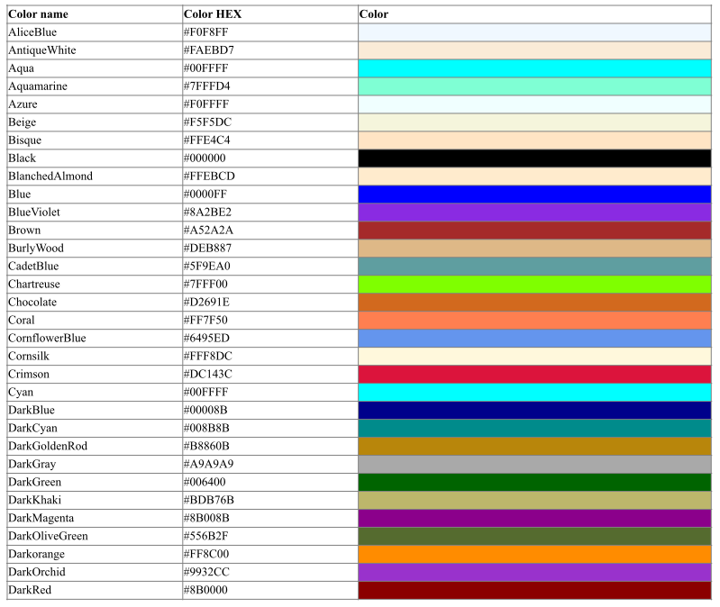
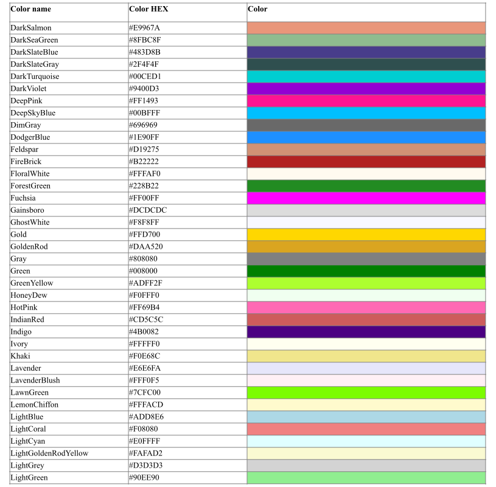
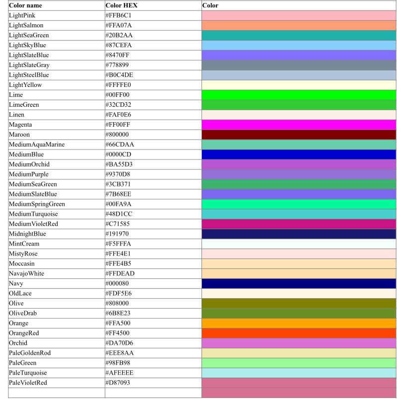
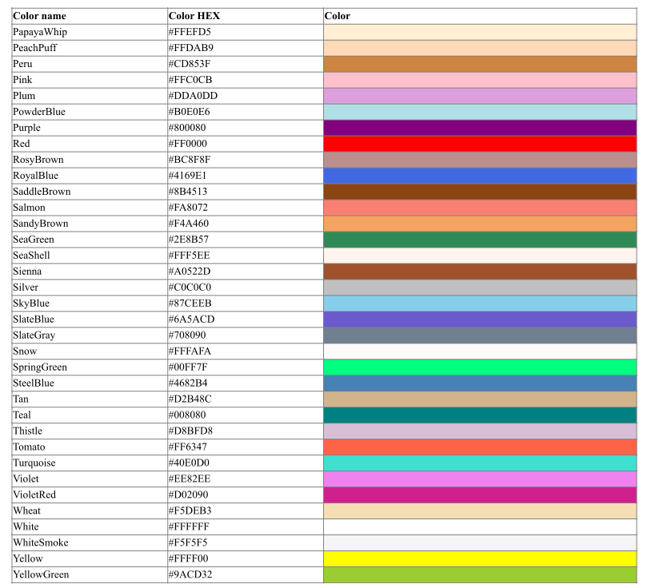

Data File Formats¶
Several data file formats that are used by the sensitivity and uncertainty analysis codes are presented in this appendix.
Format of TSUNAMI-A sensitivity data file¶
The format of the TSUNAMI-A sensitivity data file produced by SAMS, which is executed as part of TSUNAMI-1D/2D/3D, is shown in Table 98. The occurrence of each entry in the data file is followed by an identification of the data contained on each line of the file and the FORTRAN edit descriptor denoting the format of each line. A brief description of each line is also presented.
{kind=link}
Format of TSUNAMI-B sensitivity data file¶
The format of the TSUNAMI-B sensitivity data file produced by SAMS, which is executed as part of TSUNAMI-3D-K5, is shown in Table 99. The occurrence of each entry in the data file is followed by an identification of the data contained on each line of the file and the FORTRAN edit descriptor denoting the format of each line. A brief description of each line is also presented.
{kind=link}
Format of SENLIB.SEN data file¶
The SENLIB.SEN data file is generated by the SENLIB routines used in the TSUNAMI modules to compute implicit sensitivity effects. The data file contains the sensitivity of data computed in SENLIB and input to the resonance processing code BONAMIST. This file also contains the sensitivities of the extra cross sections input to BONAMIST to the number densities of each nuclide for each region of the BONAMIST input. In BONAMIST, the extra cross section contains data for the Dancoff factor. Each of the parameters for which sensitivity coefficients are computed has a unique identification number. The parameter identification numbers, corresponding parameters, and their locations in the resonance processing code input are shown in Table 100. The format of the records of the SENLIB.SEN data file is given in Table 101. Each sensitivity coefficient is identified by three records. These records are repeated until all sensitivities are listed on the data file.
Identifier number |
Parameter |
Location of parameter in resonance processing code input |
−1004 |
Extra cross section (cm-1) by zone, account for Dancoff factor in BONAMIST |
9* array in data block 2 of BONAMIST input |
Record number |
Data |
Format |
Description |
1 |
Region for BONAMIST data and parameter |
2i12 |
BONAMIST region and parameter for which sensitivity coefficient is computed. |
2 |
Nuclide and reaction MT number to which sensitivity coefficient is computed |
2i12 |
Nuclide and reaction MT number to which the sensitivity of the parameter is computed. For data currently computed by SENLIB, only the sensitivities of the parameters to the number densities of the nuclides are computed. Thus, the reaction MT number is always 1. |
3 |
Sensitivity coefficient |
es14.6 |
Relative sensitivity of parameter identified in first record to nuclide and reaction identified in second record. |
Format of BONAMIST.SEN data file¶
The BONAMIST.SEN data file is generated by the BONAMIST code, which is executed as part of the TSUNAMI-1D sequence. This data file contains the sensitivities of the groupwise cross sections that are resonance shielded in BONAMIST to the certain data input to BONAMIST. The data to which the sensitivity coefficients are computed are the number densities of the nuclides and the extra cross section by region, which contains data for the Dancoff factor. These data are listed in the data file according to the identifiers listed in Table 100. Additionally, the sensitivity of group cross sections to the number density of a particular nuclide is identified with the nuclide number from the AMPX cross-section data library.
The format of the records in the data file is identified in Table 102. Blocks of these records are printed for the non-zero sensitivities for all nuclides and reactions for which resolved resonances are processed.
Record number |
Data |
Format |
Description |
1 |
Nuclide and MT number for cross sections for which sensitivity coefficients are computed |
2i12 |
Nuclide identifier and MT number of reaction for which sensitivity data are computed. |
2 |
Parameter or nuclide and the MT number to which the sensitivity data are computed |
2i12 |
Parameter identifier for scattering cross sections and Dancoff factor or nuclide identifier and MT number to which the sensitivity coefficients are computed. If a parameter identifier is used, the MT number is set to 1. Currently only the sensitivities to number densities are computed in BONAMIST, so the only MT number printed is 1. |
3 |
First and last group for which sensitivity coefficients are printed |
2i12 |
First and last group for the sensitivity coefficients that follow. |
4 |
Sensitivity coefficients, record repeats until all groups identified by record 3 are printed |
5es14.6 |
Relative sensitivities of cross sections for nuclide and process identified by record 1 to parameter or nuclide identified in record 2 for groups corresponding to those identified by record 3. |
COVERX format¶
The COVERX data file format for storing multigroup cross-section uncertainty information is presented in this section. The COVERX format was used with the FORSS code system at ORNL. The covariance data processing code PUFF-III outputs multigroup data in the COVERX format. This the only covariance format available for use with the sensitivity and uncertainty analysis codes in SCALE.
The overall structure of a COVERX file is given in Table 103. The occurrence of the particular record type, the name of the record type and when a given record type is present on the file are identified.
Occurrence |
Record type |
Present if |
Once at beginning of file |
File Identification |
Always |
File Control |
Always |
|
File Description |
NHOLL > 0 |
|
Neutron Group Boundaries |
NNGRUP > 0 |
|
Gamma Group Boundaries |
NGGRUP > 0 |
|
Material-Reaction Control |
Always |
|
Repeat for all material‑reaction type pairs |
Material-Reaction Type Cross Sections and Error Files |
Always |
Repeat for all matrices |
Matrix Control |
Always |
Block Control |
Always |
|
Repeat for all blocks |
Matrix Data |
Always |
The details of each record type identified in Table 103 are presented in Table 104. Here, the name of the record type, the variables present on the record, the length of the record, the format of the record in FORTRAN context and a description of the content of the record are given.
{kind=link}
HTML colors¶
Colors available for use in HTML formatted output are shown in Table 105. This table was created from data available at http://www.w3schools.com/css/css_colornames.asp. Color names are not case sensitive.
|  |
{kind=link}
|  |
{kind=link}
|  |
{kind=link}
|  |
{kind=link}